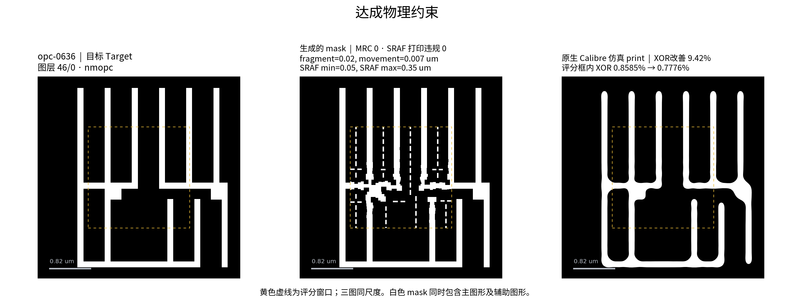

让模型
学会做 OPC。
从调用 EDA 完成任务，
走向模型自身掌握更多优化与计算能力。
OPC：提前修正掩模，让曝光后的图形更接近设计。
想一步，做一步，看结果，再调整。
短期先让模型贯穿工程流程：接收任务与环境，调用 EDA 工具，根据反馈反复调整，直到达标或确认未完成。
工程师 → EDA 工具 → 看结果，再手动调整
工程师定目标 → Agent → OPC / 仿真 / 检查工具 → 结果反馈给 Agent ↺
ReAct 就是下面这个循环：判断 → 调用工具 → 看结果 → 再判断。
仿真里的线头比目标短。先判断：是线端补偿不足，还是邻近图形的影响没有处理好？
模型通过训练，
从数据中学习如何做事。
为了让模型掌握 OPC 中的判断与操作，我们需要把完整执行过程组织成训练数据：当时的任务和环境、采取的行动、收到的反馈，以及最终结果。
要达到什么
输入图形、目标指标、允许花多少次尝试。
能用什么
工艺模型、图层、软件、可调参数和运行限制。
具体怎么做
模型发出的消息、工具调用、参数和真实返回结果。
到底好不好
最终掩模、仿真图形、指标和独立验收结论。
贴近实际、覆盖广，
质量贯穿全过程。
构造任务时，先考虑真实性与多样性。目前真实工业数据有限，我们尽量覆盖更多符合物理规律和 OPC 专业常识的场景，弥补真实场景覆盖不足。
真实性
任务与环境尽量贴近实际工程。
输入、工具、工艺条件、操作与目标应符合物理规律和专业常识。
检查工艺与工具的适用性；明确构造场景的假设，后续用工业案例校正。
多样性
覆盖不同环境、任务和执行方式。
组合不同图形、工艺、工具、约束和问题类型。
在物理和工程上合理的范围内扩展场景，避免重复相似案例，弥补真实场景覆盖不足。
质量
任务质量、执行质量、结果质量。
从任务设计到模型执行，再到结果验收，每一步都有检查要求。
任务：目标清楚、条件一致、可执行。
执行：调用有效、反馈真实、记录完整。
结果：独立验收，成功与失败都有依据。
让模型在不同任务条件下，
都能完成 OPC。
多样性覆盖任务与环境，也覆盖执行时采取的策略、遇到的反馈和失败后的处理方式。
线头、拐角、孔阵列、疏密交界
poly、metal、via 等；逐一确认适用性
光源、材料、曝光与焦距条件
Calibre、Synopsys Proteus、开源 OpenILT 等
减小边缘误差、修缺陷、提高稳定性
参数范围、尝试次数、运行时间
调整参数、比较方案、定位报错、失败恢复
有效改善、没有改善、规则违规、运行失败
线头缩短，怎么补回来？
换不同线距与拐角结构，要求减小边缘误差，同时避免相邻线桥连。
不同工具的接口、能力和适用条件需要分别确认；同一材料调整光学参数，也不等于多个独立校准的工艺。
把多样性落实到
任务构造、执行与验收。
当前管线已把任务包、EDA 调用和执行记录串起来。接下来，按下面三个环节扩充场景、统计覆盖，并持续补强真实性与质量检查。
| 环节 | 真实性 | 多样性 | 质量 |
|---|---|---|---|
| 任务与环境 | 依据物理和专业常识构造条件；结合工程师反馈校正任务包与流程。 | 扩充图形、图层、工具、工艺条件和任务目标，控制同源案例重复。 | 检查输入完整、目标一致、工艺与工具适用，先确认任务可执行。 |
| 模型执行 | 以真实 EDA 返回为反馈；对接实际操作步骤、文档和问题定位方式。 | 覆盖不同调整策略，以及报错、无改善、违规后的恢复过程。 | 核对消息、工具调用、返回结果和预算；保留可追溯的候选记录。 |
| 验收与数据 | 用工业验收要求和真实案例逐步校正；明确研究模型的适用边界。 | 覆盖不同难度、失败类型及验收目标，按薄弱类别补充数据。 | 独立核对最终掩模和指标；标清失败原因，隔离训练与测试同源数据。 |
从任务包出发，
完成一次可核验的优化。
opc-0636：固定目标图形、工艺模型和评分区域，在 8 次候选预算内调整 recipe，减小 XOR，并检查掩模规则与 SRAF 打印违规。

图中依次为目标、生成掩模和原生仿真结果，点击可放大。该候选改善了 XOR，并通过记录中的物理约束检查。
- 读取任务包
GDS、评分窗口与周围图形、初始 SVRF recipe、工艺模型、工具及目标。
- 运行并测量基线
调用 nmOPC 生成掩模，用 OPCverify 仿真，记录初始 XOR 和违规数。
- 根据反馈修改参数
生成候选，保存参数、掩模与仿真轮廓。本例候选分段最小长度为 0.02 µm，每次迭代最大移动量为 0.007 µm。
- 检查结果，保留证据
对比基线与候选的 XOR，核对规则检查，同时归档消息、调用与原始输出。
XOR 为评分框内目标与仿真图形不重合的面积 / 评分框面积。使用未校准研究工艺模型；图为软件仿真，非晶圆实测。物理约束通过不等于完整任务验收或工厂签核。